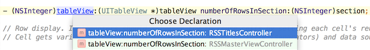

To navigate to the declaration of a class, method or variable used somewhere in the code, position the caret at its usage and press &shortcut:GotoDeclaration;.
To jump to the declaration, you can also press-and-hold Command and click the usage.
